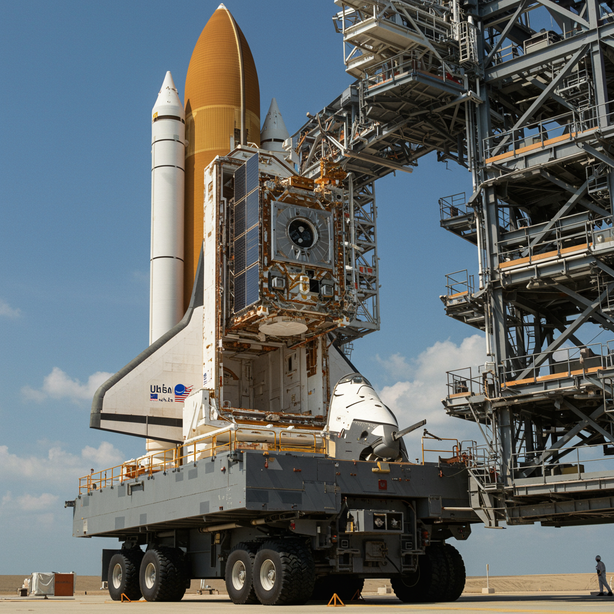

Morelos 1 y 2
Fecha de lanzamiento: Morelos 1: 17 de junio de 1985 | Morelos 2: 27 de noviembre de 1985
Agencia o país: México / Secretaría de Comunicaciones y Transportes (con apoyo de NASA y Hughes Aircraft)
Objetivo
Proveer cobertura nacional de telecomunicaciones: telefonía rural, televisión educativa, transmisión de datos y enlaces gubernamentales. Permitió interconectar regiones aisladas y modernizar la infraestructura de comunicaciones en México.
Actividad y evolución
Ambos satélites fueron construidos por Hughes Aircraft. Operaron en órbita geoestacionaria brindando servicios de comunicación satelital a todo México. Su misión incluyó enlaces de emergencia y desarrollo de contenidos educativos vía satélite. Fueron precursores de programas más avanzados como Solidaridad y Satmex.
Estado actual
Ambos satélites están retirados. Morelos 1 cesó operaciones a finales de los 90; Morelos 2 permaneció activo hasta principios de los 2000. Fueron reemplazados por sistemas más modernos. Su legado sentó las bases de la infraestructura satelital mexicana.
Dato histórico destacado
El satélite Morelos 2 fue llevado al espacio en la misión STS-61-B del transbordador Atlantis por el astronauta mexicano Rodolfo Neri Vela, convirtiéndose en el primer mexicano y el primer latinoamericano en participar en un despliegue satelital en órbita.
⬅ Volver al Archivo de Satélites